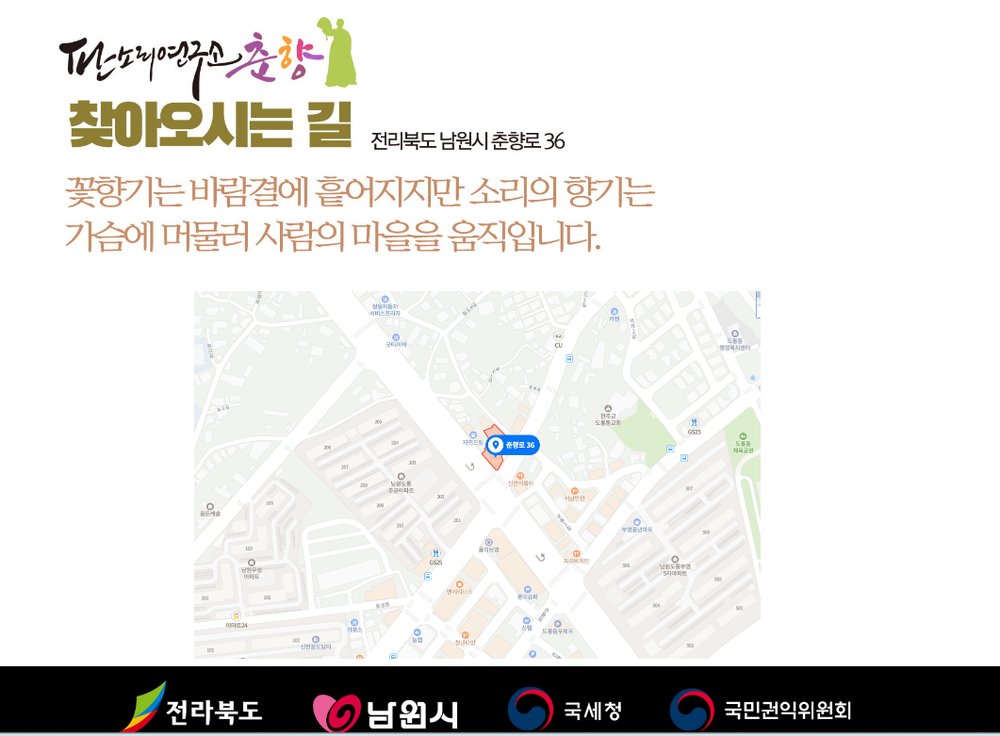

찾아오시는 길
꽃향기는 바람결에 흩어지지만 소리의 향기는 가슴에 머물러 사람의 마음을 움직입니다.
판소리연구소 춘향
전북특별자치도 남원시 춘향로 36
대표전화 063-631-9303

 함께 후원하기 ↗
함께 후원하기 ↗함께, 더 즐거운 우리 소리세상 연구
꽃향기는 바람결에 흩어지지만 소리의 향기는 가슴에 머물러 사람의 마음을 움직입니다.
판소리연구소 춘향
전북특별자치도 남원시 춘향로 36
대표전화 063-631-9303
